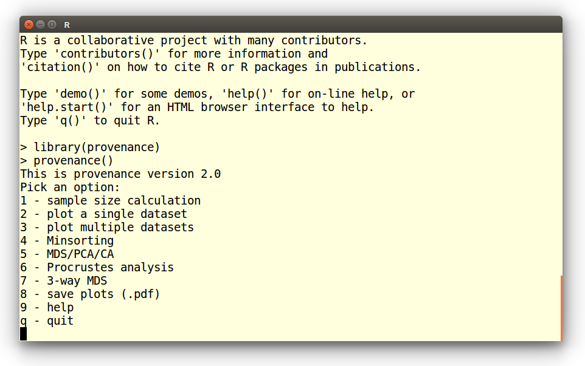

The easiest way to use provenance without the need to know
the syntax of the R programming language is to
start R and type the following commands at the prompt:
library(provenance)
provenance()
This brings up the following menu, from which the functions of
interest can be chosen:

Tutorials:
Example 1: Plotting a QFL diagram
Example 2: Plotting a Kernel Density Estimate (KDE)
Example 3: Multi-sample, multi-method summary plot
Example 4: Source Rock Density (SRD) correction
Example 5: Hydraulic sorting of heavy minerals
Example 6: Multidimensional Scaling (MDS)
Example 7: Principal Component Analysis (PCA)
Example 8: 3-way MDS
Example 1: Plotting a QFL diagram
Choosing option 2 from the start menu brings up a new list of options.
Select the first of these:
Plot a single dataset:
1 - Ternary diagram
2 - Pie charts
3 - Cumulative Age Distributions
4 - Kernel Density Estimates
1
Open a compositional dataset:
Enter file name: PT.csv
Which loads a petrographic dataset containing six different classes:
quartz (Q), K-feldspar (KF), plagioclase (P), and lithic fragments of
metamorphic (Lm), igneous/volcanic (Lv) and sedimentary (Ls) origin.
Next, we will amalgamate these six classes into three categories by
selecting the third option in the following list:
1 - Apply SRD correction
2 - Subset components
3 - Amalgamate components
4 - Subset samples
c - Continue
3
This brings up a nested sequence of queries, in which three new
amalgamated groups are defined: quartz (Q), feldspar (KF + P) and
lithics (Lm + Lv + Ls). The amalgamation is concluded by entering
an empty line:
Select a group of components from the following list:
Q,KF,P,Lm,Lv,Ls
Enter as a comma separated list of labels or click [Return] to exit:
Q
Name of the amalgamated component? quartz
Select a group of components from the following list:
quartz,KF,P,Lm,Lv,Ls
Enter as a comma separated list of labels or click [Return] to exit:
KF,P
Name of the amalgamated component? feldspar
Select a group of components from the following list:
feldspar,quartz,Lm,Lv,Ls
Enter as a comma separated list of labels or click [Return] to exit:
Lm,Lv,Ls
Name of the amalgamated component? lithics
Select a group of components from the following list:
lithics,feldspar,quartz
Enter as a comma separated list of labels or click [Return] to exit:
Three other functions can be combined with the amalgamation operation,
but for the sake of this tutorial, we will not use them and proceed by
entering 'c':
1 - Apply SRD correction
2 - Subset components
3 - Amalgamate components
4 - Subset samples
c - Continue
c
Since our amalgamated dataset contains quartz, feldspar and lithic
components, it is useful to plot it on an QFL diagram:
Plot background lines?
1 - QFL classification
2 - Dickinson's QFL diagram
3 - no lines
1
Which produces the following output:
Example 2: Plot a Kernel Density Estimate (KDE)
In this tutorial we will plot a single detrital zircon U-Pb age
distribution as a KDE. After selecting the second option from the main
menu, we open the DZ.csv datafile:
Plot a single dataset:
1 - Ternary diagram
2 - Pie charts
3 - Cumulative Age Distributions
4 - Kernel Density Estimates
4
Open a distributional dataset:
Enter file name: DZ.csv
For the sake of this exercise, we will just plot a single sample
(N13), so we need to subset the multi-sample dataset. Instructions for
plotting multiple samples are given in Example
3:
Options:
1 - Subset samples
2 - Load analytical uncertainties
c - Continue
1
Select a subset group of samples from the following list:
N1,N2,N3,N4,N5,N6,N7,N8,N9,N10,N11,N12,N13,N14,T8,T13
Enter as a comma separated list of labels:
N13
We accept the default settings for all remaining options:
Options:
1 - Subset samples
2 - Load analytical uncertainties
c - Continue
c
Options:
1 - Set minimum age
2 - Set maximum age
3 - Turn off adaptive density estimation
4 - Plot on a log scale
5 - Set bandwidth
c - Continue
c
Which produces the following graphical output:
Example 3: Multi-sample, multi-method summary plot
In this tutorial, we will plot a large 15-sample, 5-method dataset
from Namibia including:
- Four compositional datasets comprising the heavy mineral
composition (HM), bulk petrography (PT), Major and Trace element
compositions.
- One distributional dataset, containing the detrital zircon
U-Pb age distributions of the same samples.
First we need to load these samples. Let's start with the heavy minerals:
1 - Add a compositional dataset
2 - Add a distributional dataset
c - Continue
1
Open a compositional dataset:
Enter file name: HM.csv
We get presented with a new selection menu. Let's accept the default
settings, which brings us back to the previous menu:
1 - Apply SRD correction
2 - Subset components
3 - Amalgamate components
4 - Subset samples
c - Continue
c
1 - Add a compositional dataset
2 - Add a distributional dataset
c - Continue
Repeat the same steps to load PT.csv, Major.csv
and Trace.csv. Next, we load the detrital zircon age
distributions:
1 - Add a compositional dataset
2 - Add a distributional dataset
c - Continue
2
Open a distributional dataset:
Enter file name: DZ.csv
Distributional data are plotted as Kernel Density Estimates, which can
be modified by any of seven options. For this tutorial, we will again
accept the default settings:
Options:
1 - Set minimum age
2 - Set maximum age
3 - Turn off adaptive density estimation
4 - Plot on a log scale
5 - Set bandwidth
6 - Use the same bandwidth for all samples
7 - Normalise area under the KDEs
c - Continue
c
Type 'c' again to exit the file selection menu and generate a
two-column summary plot:
1 - Add a compositional dataset
2 - Add a distributional dataset
c - Continue
c
Number of columns? 2
Which produces the following output:

Example 4: Source Rock Density (SRD) correction
The effect of hydraulic sorting on the petrographic and heavy mineral
composition of detrital suites can be undone by restoring their
density to an assumed value. This procedure works because, a few
exceptions notwithstanding, the average density of continental crust
varies very little (between 2.65 and 2.8 g/cm3, say) over
all but the smallest catchment areas. In this tutorial, we will visualise
the SRD correction on a ternary diagram. Like in the
first tutorial, we select the second option in the main
provenance() menu, and open a file (PTHM.csv)
containing the relative proportions of all the detrital components
(light plus heavy minerals):
Plot a single dataset:
1 - Ternary diagram
2 - Pie charts
3 - Cumulative Age Distributions
4 - Kernel Density Estimates
1
Open a compositional dataset:
Enter file name: PTHM.csv
In order to apply the SRD correction, we need to provide a table of
mineral densities. provenance comes preloaded with a set
of default
densities. We can either use these or load a different table. It
is important to make sure that the density table uses the same
category labels as the file with the sample compositions. Finally, we
need to provide the assumed density of the source rock. For this
tutorial, we will assume a 2.71 g/cm3:
1 - Apply SRD correction
2 - Subset components
3 - Amalgamate components
4 - Subset samples
c - Continue
1
Open a density file [y] or use default values [N]? n
Enter target density in g/cm3: 2.71
Since we want to plot the SRD corrected composition on a ternary
diagram, we need to reduce the number of components in the dataset
from 26 to 3. This can be done by amalgamation (see the
first example) or subsetting, as shown next.
Let's select garnet (gt), epidote (ep) and amphibole (amp):
1 - Apply SRD correction
2 - Subset components
3 - Amalgamate components
4 - Subset samples
c - Continue
2
Select a subset group of components from the following list:
Q,KF,P,Lv,Ls,Lm,mica,opaques,FeOx,turbids,zr,tm,rt,TiOx,sph,
ap,ep,othLgM,gt,st,and,ky,sil,amp,cpx,opx
Enter as a comma separated list of labels:
gt,ep,amp
Finally, we plot the SRD-corrected gt-ep-amp composition on an empty
ternary diagram:
1 - Apply SRD correction
2 - Subset components
3 - Amalgamate components
4 - Subset samples
c - Continue
c
Plot background lines?
1 - QFL classification
2 - Dickinson's QFL diagram
3 - no lines
3
Show SRD correction [Y or n]? y
Where the last instruction adds lines to the diagram, showing the
effect of the SRD correction on the gt-ep-amp composition:
Example 5: Hydraulic sorting of heavy minerals
In this tutorial, we will compute the grain size distribution of heavy
minerals in a sediment sample. To this end, select option 4 from the
main provenance() menu. Choose the first option of the next
menu to model the heavy mineral composition of an actual sample:
Change default:
1 - bulk composition [default=tectonic endmembers]
2 - average grain size in phi units [default=2]
3 - grain size standard deviation [defaults=1]
4 - transport medium [default=seawater]
5 - plot resolution [default: from -2.25 to 5.5 by 0.05]
6 - selected minerals [default: all]
c - continue
1
Open a compositional dataset:
Enter file name: HM.csv
Rather than plotting all 15 minerals, select zircon (zr) and amphibole
(amp):
Change default:
1 - bulk composition [default=tectonic endmembers]
2 - average grain size in phi units [default=2]
3 - grain size standard deviation [defaults=1]
4 - transport medium [default=seawater]
5 - plot resolution [default: from -2.25 to 5.5 by 0.05]
6 - selected minerals [default: all]
c - continue
6
Select a subset group of components from the following list:
zr,tm,rt,TiOx,sph,ap,ep,gt,st,and,ky,sil,amp,cpx,opx
Enter as a comma separated list of labels:
zr,amp
Type 'c' and choose sample N1:
Change default:
1 - bulk composition [default=tectonic endmembers]
2 - average grain size in phi units [default=2]
3 - grain size standard deviation [defaults=1]
4 - transport medium [default=seawater]
5 - plot resolution [default: from -2.25 to 5.5 by 0.05]
6 - selected minerals [default: all]
c - continue
c
Select one of the following samples to plot:
N14,N13,N12,N11,N10,N9,N8,N7,N6,N5,N4,N3,N2,N1,T8,T13
or press [Return] to exit
N1
Which produces the following plot, showing that fine grained zircon is
hydraulically equivalent to coarser grained amphibole in the sample:
Example 6: Multidimensional Scaling (MDS)
In this tutorial we will perform an MDS analysis of the detrital
zircon dataset. After selecting the fifth option from the main menu,
we open the DZ.csv file:
1 - Load a compositional dataset
2 - Load a distributional dataset
2
Open a distributional dataset:
Enter file name: DZ.csv
We will use the default Kolmogorov-Smirnov dissimilarity for this
exercise. Alternatively, it is also possible to use the
Sircombe-Hazelton distance but this requires a separate input file
with analytical uncertainties. This can be done by selecting the third
option in the following menu. For this exercise, however, we will
accept the default settings:
Options:
1 - Subset samples
2 - Combine samples
3 - Load analytical uncertainties
c - Continue
c
initial value 10.433734
iter 5 value 8.523890
iter 10 value 8.154735
iter 15 value 8.048099
iter 20 value 7.871811
iter 20 value 7.868858
iter 25 value 7.642453
iter 25 value 7.640889
iter 25 value 7.640383
final value 7.640383
converged
provenance() has calculated a preliminary MDS-configuration,
using a non-metric MDS algorithm. If the stress value is extremely
low, the user is strongly encouraged to switch to classical scaling in
order to avoid overfitting the data. The stress is 7.64% in our
current example, and so the classical option is not presented
here. Finally, we can modify the visual appearance of the MDS
configuration in several ways. In this example, we will add solid
lines connecting nearest neighbours in Kolmogorov-Smirnov space (and
dashed lines connecting second-nearest neighbours) and accept the
default settings for all other options:
Options:
1 - Add nearest neighbour lines
2 - Change plot character
3 - Change size of plot character
4 - Change position of text label relative to plot character
5 - Add X and Y axis ticks
c - Continue
1
Options:
1 - Add nearest neighbour lines
2 - Change plot character
3 - Change size of plot character
4 - Change position of text label relative to plot character
5 - Add X and Y axis ticks
c - Continue
c
This produces two pieces of graphical output: an MDS configuration and
a 'Shepard plot' illustrating the goodness of fit of the non-metric
configuration:
Example 7: Principal Component Analysis (PCA)
The previous tutorial showed how to construct an MDS configuration for
a distributional dataset. Nearly exactly the same procedure can be
applied to compositional datasets such as heavy mineral compositions
or chemical compositions. In strictly positive compositional datasets,
for which the Aitchison distance can be safely used, it is also
possible to perform Principal Component Analysis (PCA), which is a
special case of classical MDS. PCA offers the advantage that it can
jointly show the configuration and the endmember compositions as a
'biplot'. The current tutorial will illustrate this using the major
element composition of the Namib dataset. First, we again select the
fifth option of the main provenance() menu and load
the Major.csv file, after which we accept the default
settings:
1 - Load a compositional dataset
2 - Load a distributional dataset
1
Open a compositional dataset:
Enter file name: Major.csv
1 - Apply SRD correction
2 - Subset components
3 - Amalgamate components
4 - Subset samples
c - Continue
c
At this point, we are offered three options, the first of which
performs PCA analysis:
1 - Use Aitchison distance (PCA, default)
2 - Use Aitchison distance (MDS)
3 - Use Bray-Curtis dissimilarity (MDS)
1
The resulting graphical output is shown below:
Example 8: 3-way MDS
In this tutorial, we will perform a 3-way MDS analysis of five
datasets from Namibia. After selecting the 7th option from the main
menu, loading the datasets is done as in Example
3. The 3-way MDS function generates two pieces of graphical
output: the group configuration and subject weights:
We can save these plots as vector-editable .pdf files by
selecting the eigth option of the main menu:
Pick an option:
1 - sample size calculation
2 - plot a single dataset
3 - plot multiple datasets
4 - Minsorting
5 - MDS/PCA
6 - Procrustes analysis
7 - 3-way MDS
8 - save plots (.pdf)
9 - help
q - quit
8
Enter a name for plot 2: groupconfiguration
Enter a name for plot 3: subjectweights
Which produces groupconfiguration.pdf
and subjectweights.pdf.